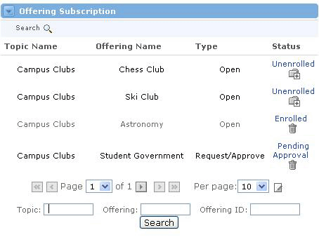

Offering Administration Channel
Looking for more help options? Click Here
Offering Administration : Managing Offerings
View All Active Offerings : Managing Offerings
Edit or Delete an Offering : Modify Offerings
Export an Offering
The Offering Channel allows the user to add and edit offerings within the system. Offerings must include the following information:
- Topic
- Offering name
- Description
- User enrollment model
- Default type for enrolled users
Administrative Options
Add - Allows the user to add a new offering.
|
Search - Allows the user to search for active offerings. |
|
Inactive - Allows the user to search for and view inactive offerings. |
Offering Specific Options For each of the offerings, the user has five options.
|
 - Allows the user to view the details of an offering.
- Allows the user to view the details of an offering. - Allows users with appropriate permissions to edit the details of an offering.
- Allows users with appropriate permissions to edit the details of an offering. - Allows users with appropriate permissions to delete an offering.
- Allows users with appropriate permissions to delete an offering.
Offering States
There are two types of Offerings, active and inactive. When an Offering is created, it is considered Active. When an Active Offering is deleted, its status becomes Inactive. Most people cannot view Inactive Offerings. This is a tidy way of storing unused Offerings for future use, without them cluttering up the Active Offerings list. This feature also allows sponsors to continue to have access to an offering after the conclusion of a term, while removing the offering from the students' or members' view.
View Active Offerings To view Active Offerings a user has two options. Users with proper privileges can view all offerings by searching within the Offering Administration channel. The Offering Subscription channel also allows users to view offerings with Open and Request/Approve enrollment types. To view offerings within the Offering Subscription channel, follow these steps:
|

Adding a New Offering
To add a new Offering, complete these steps:
- Click the Add icon at the top of the Offering Administration channel.
- You should now see the Add Offering screen.
- Choose a Topic.
- Enter an Offering Name and a short Description in the text fields.
- Select a User Enrollment Model based upon the way users can be enrolled. Open Enrollment is open for any users to enroll. Request/Approve enrollment requires the user to get approval from the Offering Sponsor before they will be enrolled. In the Facilitator model, users can only be enrolled by the Offering Sponsor or a system administrator; they don't have the means to request enrollment. An enrollment model of SIS is used for integrations with third party Student Administration Systems.
- Select an Enrolled User Default Type from the drop-down list.
- Enter any additional details about the offering such as Offering ID, Term, Start Date, End Date, Meeting Days, Meeting Times, and Location.
- When you are satisfied with all settings for this offering, click the Submit button.
- You will now be able to search for and view your new offering in the Offering Administration channel.
Viewing Details of an Offering To view the details of the Offering you just added, or for any Active Offering, follow these steps:
|

To Edit an Offering, complete these steps:
- Locate the Offering Administration channel.
- Find the Name of the Offering you would like to edit via the search function, and click the Edit icon next to it.
- You will be able to edit all of the offering details including Topic Name, Offering Name, Offering Description, User Enrollment Model, and Enrolled User Default Type.
- Click the Submit button when all of your edits are finished.

To Delete an Offering, complete these steps:
- Click the Delete icon next to the Offering you'd like to delete. This will not delete the Offering permanently, but rather, it will change its status to Inactive.
- Select the Yes radio button and click Submit to confirm that you intend to inactivate this Offering.
- To permanently Delete this Offering, you must first be able to View Inactive Offerings. Click the Inactive link at the top of the channel.
- You will now see all Inactive Offerings. To permanently Delete an offering from this view, click the Delete icon next to that Offering.
- In the confirmation screen, select the Yes radio button and click Submit.
- The Offering will now be permanently deleted from the system.
|
|
You can delete an Offering if there are any users enrolled in that Offering. |
|
To export an offering into a delimited file, simply follow these steps:
|
|
The exported file is a ZIP compressed file which contains a file called "offeringExport.xml." This file contains information from the Offering that is not specific to a single user. The exported file is in XML format, and it contains the following information:
|